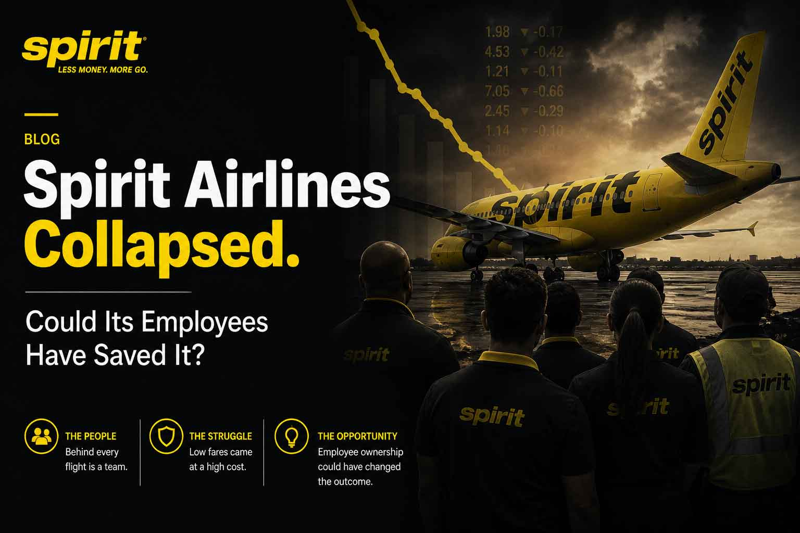
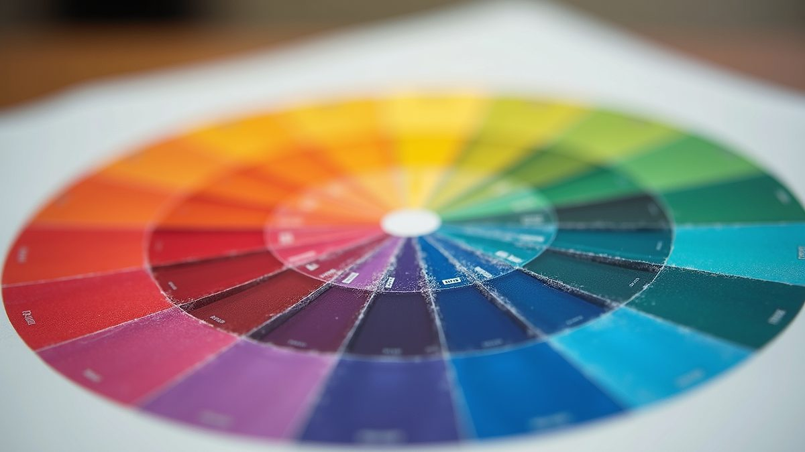

The Cultural
Alchemy Blog.
Brand design insights, AI systems thinking, and cultural identity strategy — from 30+ years of building brands rooted in what's real.

Spirit Airlines is gone. The government couldn't save it. Wall Street wouldn't. But 17,000 workers had something nobody talked about — and it might have been enough. Ownership changes behavior because it changes the relationship between labor and outcome.
Read the Full Essay → Branding
Branding
Brands don't exist in isolation — they're embedded in the cultural milieu that shapes consumer behavior. Here's the 4-dimension framework and 5 C's for aligning your brand with the codes your audience actually lives by.
Read More →
BrandingColor selection is more than aesthetic preference — it's a communicative tool that encapsulates brand essence. Learn the 70-20-10 rule and why every color choice in your logo should be an intentional act.
Read More →The imperative to cultivate a robust digital presence has become unequivocal. Here are seven actionable strategies to manage your brand identity across every digital touchpoint — from social to search to reputation.
Read More → Branding
Branding
A brand's reputation is shaped as much by its online presence as by real-world actions. Businesses that invest deliberately in digital reputation enjoy stronger customer loyalty — and those that don't, don't last.
Read More →Creative branding is the imperative work of transforming abstract business ideas into compelling visual assets — through a blend of artistic ingenuity and strategic planning. Here's how Moor Graphix approaches it.
Read More →17,000 workers had something nobody talked about — an ESOP path, a community crowdfunding floor, an ownership model that changes behavior because it changes the relationship between labor and outcome.
Read More →The Harlem Renaissance wasn't just art — it was a master class in community-driven brand activation. Here's why that lineage matters in Douglas County, and what it means to build culture intentionally in a place people overlook.
Read More →Setting up a business social presence shouldn't be a mystery. This practical help sheet walks you through exactly what to fill in, what to avoid, and how to position your brand from day one on every major platform.
Read More →That $5 logo is costing you more than you think. A professional logo isn't just an image — it's a first impression, a trust signal, and a long-term brand asset. Here's the full economic and strategic case for investing in quality design.
Read More →Over 60% of web traffic now comes from mobile devices — and Google ranks mobile-first. If your site isn't optimized for small screens, you're invisible to most of your audience. Here's how to audit and fix your mobile experience.
Read More →The entrepreneurship journey looks different from the inside than it does on Instagram. Here's an honest breakdown of what it takes — the mental game, cash realities, and the strategic pivots that separate businesses that last from those that don't.
Read More →Starting a business is less about inspiration and more about execution. This guide walks you through every foundational step — from validating your idea to registering your entity to launching with a strategy, not just hope.
Read More →Mullein has been used as a respiratory herb for centuries. After years of asthma medication cycles, Sid Washington started exploring the research — and what changed when the plant entered the picture.
Read More →The Q4 marketing window is the biggest opportunity small businesses overlook. Here are campaign frameworks that connect Black Friday urgency to Black History Month resonance — strategic, culturally informed, and built to convert.
Read More →Family businesses are the backbone of local economies and generational wealth. Here's why investing in their growth — through better branding, operational systems, and succession planning — isn't just good business, it's community infrastructure.
Read More →Not every business needs a custom-coded site from day one. Wix offers a powerful, flexible platform for small businesses ready to establish a professional online presence without developer dependency. Here are 10 reasons to start there.
Read More →Disorganized documentation doesn't just slow you down — it creates legal risk, tax headaches, and credibility problems. This step-by-step guide will save you hours every quarter and prepare your business for growth and audits.
Read More →Backlinks are one of the most powerful — and most misunderstood — elements of SEO. Here's what small business owners need to know about link authority, earning quality backlinks without black-hat tactics, and why it matters long-term.
Read More →Logo? Check. But what about the SVG, EPS, PNG, and PDF versions? What's a brand guide, and why do you need one? This breakdown tells small business owners exactly what deliverables to expect — and demand — from a professional design engagement.
Read More →Standing out in a saturated market requires more than a good logo. The brands that cut through have a clear point of view, a consistent voice, and a deep understanding of the cultural codes their audience lives by. Here are the keys.
Read More →AI-generated layouts, voice interfaces, and immersive 3D web experiences — the next wave of website design is already here for early adopters. What small businesses and creative studios need to know to stay ahead of the curve.
Read More →Financial literacy isn't a luxury for creative business owners — it's survival. This breakdown covers pricing your work, separating personal and business finances, understanding cash flow, and building the money mindset your business actually needs.
Read More →Taxes for the self-employed creative are not taught in design school — but they should be. This guide covers quarterly estimates, home office deductions, contractor obligations, and the most common mistakes small business owners make at tax time.
Read More →Not all backlinks are created equal — and shortcuts get you penalized. Here are nine legitimate, relationship-based methods to build a backlink profile that boosts your domain authority and drives real referral traffic to your business.
Read More →Search engine optimization isn't just for tech companies — it's the most cost-effective long-game marketing strategy available to small businesses. Here are eight concrete reasons to invest in SEO before spending another dollar on ads.
Read More →The best salespeople don't sell — they educate, entertain, and earn trust. Content that answers real questions, tells real stories, and demonstrates real expertise converts at a higher rate than any ad spend. Here's how to build a content strategy that sells.
Read More →Every design decision at Moor Graphix follows a deliberate methodology — not a formula, but a structured approach to discovery, development, and delivery. Here is the four-phase framework behind every project.
Read More →A brand is not a logo. It is the living identity of your business — the sum of every promise, principle, and experience you deliver. Here are the 8 essential components of a brand that builds real customer loyalty.
Read More →Copywriting is the voice of your brand strategy — the words that either connect with your audience or get ignored. Here's the breakdown of copy vs. content, how to write in your brand voice, and what good copy actually accomplishes.
Read More →Logo pricing confuses clients and designers alike. This breakdown examines what goes into professional logo pricing — time, expertise, research, revisions, and the true cost of getting it wrong — so you can have an informed conversation about value.
Read More →A logo is never just an image. It's a compressed symbol that carries your brand's promise, personality, and positioning. A breakdown of the visual elements that make a logo work — typography, iconography, color, and the negative space between them.
Read More →Social media profiles are rented land. A website is owned property. The definitive case for why every small business — no matter how active on social — needs a professionally designed, SEO-optimized website that works around the clock.
Read More →No posts in this category yet. Check back soon — or reach out directly.